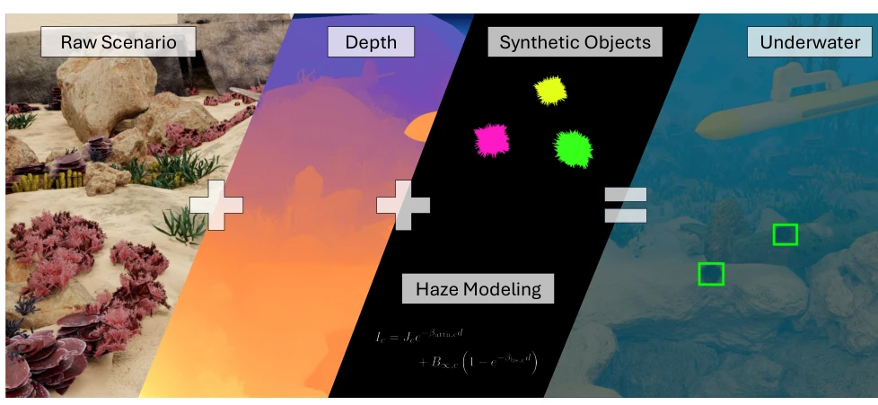
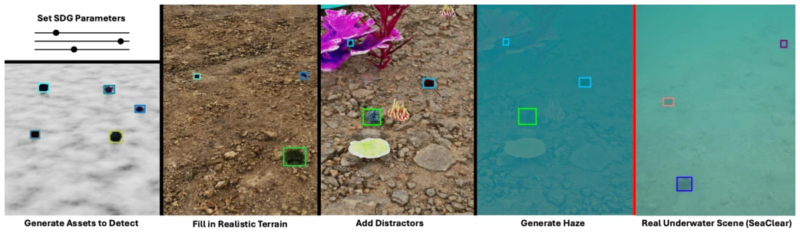
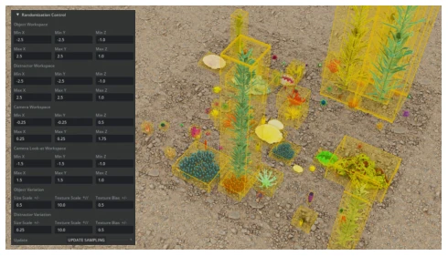
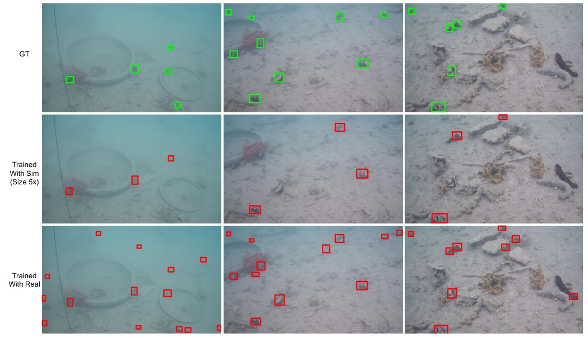

Underwater robot perception has long been plagued by data scarcity, and this paper attempts to fill the gap with synthetic data. OceanSim adds an SDG pipeline capable of generating labeled sea urchin detection data. It looks quite promising, compatible with ROS2, and allows tuning of haze parameters. However, the experimental results are somewhat disheartening: detectors trained on synthetic data show dismal recall on real data, especially for blurred sea urchins. The authors themselves admit that simply piling up data is useless; rendering fidelity is required. This is like using Lego-built sea urchins to catch real ones; although it can be used as a makeshift solution, it is far from "passing as real". However, the open-source code is commendable, at least allowing future researchers not to reinvent the wheel from scratch. Although claimed to be scalable, the actual sim-to-real gap remains huge, especially when facing real underwater turbid environments, where model performance is far inferior to baselines trained on real data. This once again proves that simple domain randomization is insufficient to solve underwater-specific optical degradation problems; future efforts must focus on physical modeling.
The underwater environment is complex; light attenuation and scattering make visual perception extremely difficult to generalize [1]. Collecting real annotated data is costly and limited [15]. Scarcity of underwater perception data not only limits the development of end-to-end learning but also leads to poor generalization ability of models across different sites [15]. Existing simulators such as Stonefish [2] and HoloOcean [4] support sensors but lack scalable SDG pipelines, making it difficult to generate large-scale labeled data. OceanSim [12] is fast but lacks SDG. This paper aims to solve this pain point, lowering training thresholds through synthetic data to achieve sim-to-real transfer. Especially regarding underwater-specific visual degradation, existing works mostly focus on domain randomization for land scenarios, which often fails when directly applied [16]. Therefore, building an SDG framework specifically tailored to underwater optical characteristics and supporting large-scale generation appears particularly urgent to bridge the gap between simulation and the real world.

Fig. 1: OceanSim rendering pipeline overview, with the additional ability to add labeled synthetic objects with our proposed Synthetic Data Generation pipeline.
The overall process is based on an OceanSim extension. 1) Haze Modeling: Adopting the Sea-thru model [29], simulating attenuation and backscatter through deferred shading, formulas involving depth map d and coefficients. 2) Terrain: Using PolyHaven's PBR textures, combined with displacement maps to generate undulations. 3) Objects: Sea urchins use generative models or public assets, adding distractors to increase diversity. 4) Randomization: GUI controls object generation ranges, lighting, and haze parameters. 5) Integration: ROS2 wrapper supports topic publishing. The core lies in procedurally randomly generating diverse scenes, automatically outputting KITTI format annotations. The renderer utilizes RTX to automatically synchronize ground truth annotations, supporting RGB-D and sonar sensors. Scene physics calculation is achieved through the OpenUSD API, ensuring camera and object configurations comply with physical laws. This design ensures both generation efficiency and physical consistency, providing a standardized input interface for downstream perception tasks, making large-scale data production possible.

Fig. 2: Our full SDG image generation pipeline compared against a real-world image from SeaClear [15]. First, sea urchins are spawned on a plane mesh textured from black-white perlin noise. Then, PBR textured terrain is added. Next, distractor objects are spawned. Finally, underwater haze effects are included. Detection labels are automatically generated by renderer’s underlying algorithm.

Fig. 3: An SDG scene tuning playground we implemented in IsaacSim. On the left is the GUI that exposes various SDG settings including object spawning range and randomization parameters to the user. On the right is a snapshot of the native viewport with its 3D bounding box annotation turned on.
Task: Sea urchin detection. Dataset: SeaClear [15] as the real test set. Models: YOLOv9 [39] and DETR [40]. Training uses synthetic data entirely. Ablation studies show that enabling Haze, Terrain, and Distractor all improve performance, but without Haze, performance is nearly zero. Increasing data volume (1x to 10x) yields limited improvement for DETR, indicating diversity is more important than quantity. Compared to real data training, synthetic data training shows significantly lower Recall, especially under heavy attenuation. The conclusion is that fidelity and diversity remain bottlenecks. Quantitative results show that DETR trained on synthetic data reaches only about half of the real data trained mAP50. Qualitative comparison indicates that synthetic data struggles to restore the blurred edges and background noise of real underwater objects. This suggests that simply increasing sample quantity cannot make up for the lack of rendering fidelity; future work needs to improve light transmission models to narrow the gap. Experiments also found that YOLO and DETR have different sensitivities to scene changes; Transformer architecture has advantages in spatial structure learning but is also limited by the coverage of data distribution.

Fig. 4: Qualitative comparison of the best-performing models trained on synthetic and real-world data. The first row shows the ground-truth labels from the SeaClear dataset [15]. The second row shows predictions from the DETR trained with the 5× simulated dataset. The third row shows predictions from the DETR model trained on the real-world training dataset, as reported in Table V.